Thành phần lành tính
Ưu tiên sản phẩm không chứa paraben, phthalate, hương liệu mạnh.
Cẩm nang chăm sóc mẹ bầu
Tiêu Chí Lựa Chọn Và Gợi Ý Sản Phẩm
Trên thị trường hiện nay có nhiều loại kem chống rạn da dành cho mẹ bầu với thành phần và công dụng khác nhau. Việc hiểu rõ tiêu chí lựa chọn sẽ giúp mẹ tìm được sản phẩm phù hợp, an toàn và hiệu quả trong quá trình chăm sóc da thai kỳ.
Chọn đúng sản phẩm cho mẹ
Để tìm được sản phẩm phù hợp, mẹ bầu nên dựa vào các tiêu chí quan trọng dưới đây:
Ưu tiên sản phẩm không chứa paraben, phthalate, hương liệu mạnh.
Giúp da mềm mại, tăng độ đàn hồi.
Được kiểm nghiệm da liễu, phù hợp với làn da nhạy cảm.
Kết cấu nhẹ, không gây bết dính.
Tìm sản phẩm phù hợp
| Sản phẩm | 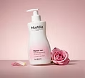 | 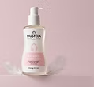 | 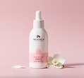 | 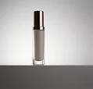 | 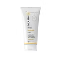 |
|---|---|---|---|---|---|
| Xuất xứ | Pháp | Nhật Bản | Việt Nam | Pháp | Thái Lan |
| Thành phần | Bơ hạt mỡ, peptide, tinh chất bơ | Chiết xuất thực vật, Collagen | Vitamin E, dầu olive, tinh dầu thiên nhiên | Centella Asiatica, Vitamin E | Phức hợp độc quyền Regestril |
| Dưỡng ẩm | ★★★★★ | ★★★★★ | ★★★★★ | ★★★★ | ★★★★ |
| Độ an toàn | ✓ | ✓ | ✓ | ✓ | ✓ |
| Phù hợp với | Mẹ bầu và sau sinh | Mẹ bầu | Mẹ bầu | Mẹ bầu và sau sinh | Mẹ bầu |
| Giá tham khảo | Cao | Trung bình | Trung bình | Cao | Trung bình |
Được nhiều mẹ bầu tin dùng
Gợi ý cho mẹ
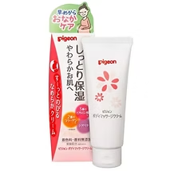
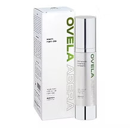
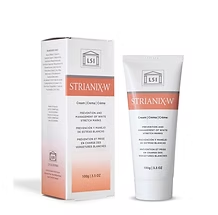
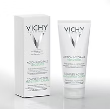
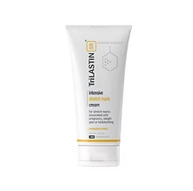
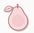
Thành phần thiên nhiên Pháp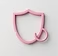
Thành phần an toàn lành tính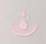
Được kiểm nghiệm da liễu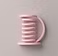
Phù hợp với làn da nhạy cảm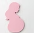
Đồng hành cùng mẹ trong suốt thai kỳ